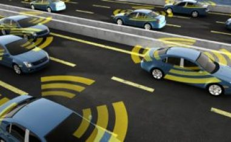

Blockchain

What is Blockchain?
The Blockchain is an undeniably ingenious invention – the brainchild of a person or group of people known by the pseudonym, Satoshi Nakamoto. But since then, it has evolved into something greater, and the main question every single person is asking is: What is Blockchain? By allowing digital information to be distributed but not copied, blockchain technology created the backbone of a new type of internet. Originally devised for the digital currency, Bitcoin, the tech community has now found other potential uses for the technology. A blockchain is, in the simplest of terms, a time-stamped series of immutable record of data that is managed by cluster of computers not owned by any single entity. Each of these blocks of data (i.e. block) are secured and bound to each other using cryptographic principles (i.e. chain). The blockchain network has no central authority — it is the very definition of a democratized system. Since it is a shared and immutable ledger, the information in it is open for anyone and everyone to see. Hence, anything that is built on the blockchain is by its very nature transparent and everyone involved is accountable for their actions.
“Blocks” on the blockchain are made up of digital pieces of information. Specifically, they have three parts:
1. Blocks store information about transactions, say the date, time, and dollar amount of your most recent purchase from Amazon.
2. Blocks store information about who is participating in transactions. A block for your splurge purchase from Amazon would record your name along with Amazon.com, Inc. Instead of using your actual name, your purchase is recorded without any identifying information using a unique “digital signature,” sort of like a username.
3. Blocks store information that distinguishes them from other blocks. Much like you and I have names to distinguish us from one another, each block stores a unique code called a “hash” that allows us to tell it apart from every other block. Let’s say you made your splurge purchase on Amazon, but while it’s in transit, you decide you just can’t resist and need a second one. Even though the details of your new transaction would look nearly identical to your earlier purchase, we can still tell the blocks apart because of their unique codes.
When a block stores new data it is added to the blockchain. Blockchain, as its name suggests, consists of multiple blocks strung together. In order for a block to be added to the blockchain, however, four things must happen:
1. A transaction must occur. Let’s continue with the example of your impulsive Amazon purchase. After hastily clicking through multiple checkout prompts, you go against your better judgment and make a purchase.
2. That transaction must be verified. After making that purchase, your transaction must be verified. With other public records of information, like the Securities Exchange Commission, Wikipedia, or your local library, there’s someone in charge of vetting new data entries. With blockchain, however, that job is left up to a network of computers.
3. That transaction must be stored in a block. After your transaction has been verified as accurate, it gets the green light. The transaction’s dollar amount, your digital signature, and Amazon’s digital signature are all stored in a block.
4. That block must be given a hash. Not unlike an angel earning its wings, once all of a block’s transactions have been verified, it must be given a unique, identifying code called a hash. The block is also given the hash of the most recent block added to the blockchain.
Blockchain has a wide range of uses in very different industries, from banking to voting, where most industries will benefit from its introduction. It is a cost effective, accurate, efficient system that is expected to grow massively in the coming years.
Autonomous Things

The emergence of autonomous things over the last few years, I believe, has been an exciting development within technology that is only going to become more innovative and more and more exciting as time goes on. Driven by the likes of big data, AI and cloud technologies, I have no doubt that – as these technologies advance – autonomous things are only going to continue to advance at a break neck speed. Autonomous vehicles are constantly collecting data from their environment; such as the road conditions, potential hazards, pedestrians, surrounding vehicles and even storing the routes and roads themselves. In order for these vehicles to become safer they rely on a vast amounts of software and the collection of vast amounts of data to train the artificial intelligence to ensure the safety of their passengers without humans having to intervene. I have read a stat that says these vehicles exchange around 15,000 pieces of data within a tenth of a second, this is a figure that could rise to 200,000 pieces of data by 2020.
Self-navigating drones are the first AuT technology in deployment. It is expected that the first mass-deployment of AuT technologies will be the autonomous car, generally expected to be available around 2020. Other currently expected AuT technologies include home robotics (e.g., machines that provide care for the elderly, infirm or young), and military robots (air, land or sea autonomous machines with information-collection or target-attack capabilities).
AuT technologies share many common traits, which justify the common notation. They are all based on recent breakthroughs in the domains of (deep) machine learning and artificial intelligence. They all require extensive and prompt regulatory developments to specify the requirements from them and to license and manage their deployment (see the further reading below). And they all require unprecedented levels of safety (e.g automobile safety) and security, to overcome concerns about the potential negative impact of the new technology.
Immersive Experience
Immersion into virtual reality is a perception of being physically present in a non-physical world. The perception is created by surrounding the user of the VR system in images, sound or other stimuli that provide an engrossing total environment. The name is a metaphoric use of the experience of submersion applied to representation, fiction or simulation. Immersion can also be defined as the state of consciousness where a "visitor" or "immersant" awareness of physical self is transformed by being surrounded in an artificial environment.It is used for describing partial or complete suspension of disbelief, enabling action or reaction to stimulations encountered in a virtual or artistic environment. The degree to which the virtual or artistic environment faithfully reproduces reality determines the degree of suspension of disbelief. The greater the suspension of disbelief, the greater the degree of presence achieved.
Immersive virtual reality is a hypothetical future technology that exists today as virtual reality art projects, for the most part. It consists of immersion in an artificial environment where the user feels just as immersed as they usually feel in consensus reality.
Immersive technology is applied in several areas, including the adult industry, art, entertainment and video games and interactive storytelling, military, education, and medicine. As immersive technology becomes more mainstream, it will likely pervade many other industries.

Popular Images
Quotes
The blockchain is an incorruptible digital ledger of economic transactions that can be programmed to record not just financial transactions but virtually everything of value.” – Don & Alex Tapscott, authors Blockchain Revolution (2016).
The blockchain does one thing: It replaces third-party trust with mathematical proof that something happened. Adam Draper
“You can’t stop things like Bitcoin. It will be everywhere and the world will have to readjust. World governments will have to readjust” John McAfee, Founder of McAfee.
“Automated or self-driving vehicles are about to change the way we travel and connect with one another.” U.S. Secretary of Transportation Elaine Chao.